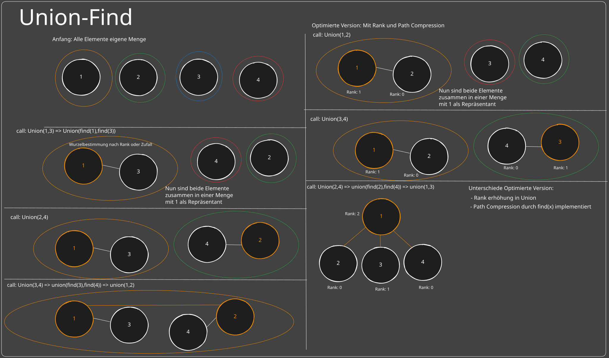
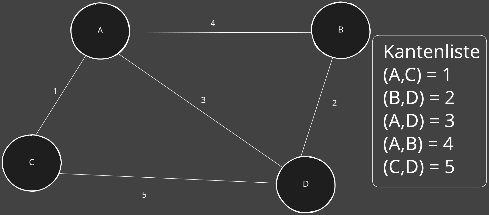

📊 Union Find¶
📚 1️⃣ Begriffe & Grundlagen¶
-
Menge (Set):
Eine Gruppe von Elementen, die zusammengehören.
Beispiel:{1, 2, 3}ist eine Menge. -
Disjunkte Mengen:
Mengen, die keine gemeinsamen Elemente haben.
Beispiel:{1, 2}und{3, 4}sind disjunkt. -
Repräsentant (Root/Wurzel):
Ein "Leader" der Menge.
Jeder Knoten zeigt (direkt oder indirekt) auf diesen Repräsentanten. -
Union-Find (Disjoint-Set Union, DSU):
Eine Datenstruktur, die hilft:- Zu prüfen, ob zwei Elemente in derselben Menge sind (
find). - Zwei Mengen zu einer Menge zu vereinigen (
union).
- Zu prüfen, ob zwei Elemente in derselben Menge sind (
📝 Zusammenfassung der wichtigsten Punkte¶
| Begriff | Beschreibung |
|---|---|
| Union | Verbindet zwei Mengen (macht einen gemeinsamen Repräsentanten). |
| Find | Findet den Repräsentanten (Wurzel) einer Menge. |
| Rank | Schätzung der "Tiefe" des Baumes (hilft, die Struktur beim union flach zu halten). |
| Path Compression | Optimiert die find-Methode, indem alle Knoten direkt mit der Wurzel verbunden werden. |
🔍 2️⃣ Operationen in Union-Find¶
-
find(x)– Finde den Repräsentanten der Menge vonx.- Gibt den "Root" der Menge zurück, zu der
xgehört. - Beispiel: In
{1 → 2 → 3}, ist3der Repräsentant von1. -
union(x, y)– Vereine die Mengen vonxundy. -
Falls
xundyin verschiedenen Mengen sind → Vereine sie. - Nach
union(x, y)haben beide Elemente denselben Repräsentanten.
- Gibt den "Root" der Menge zurück, zu der
-
union(mit Rank):- Bestimmt, wie Mengen zusammengeführt werden, um die Struktur flach zu halten.
- Flache Bäume → schnellere
find-Operationen. -
find(mit Path Compression): -
Optimiert die Struktur nachträglich, wenn wir nach einem Repräsentanten suchen.
- Macht den Baum noch flacher, indem alle Knoten direkt mit der Wurzel verbunden werden.
INITIALISIERE parent[x] = x, rank[x] = 0 für jedes x
FUNKTION find(x):
WENN parent[x] != x:
parent[x] = find(parent[x]) // Path Compression
GIB parent[x] zurück
FUNKTION union(x, y):
rootX = find(x)
rootY = find(y)
WENN rootX == rootY:
GIB // Schon in derselben Menge
WENN rank[rootX] < rank[rootY]:
parent[rootX] = rootY // rootY bleibt Wurzel
ANDERNFALLS WENN rank[rootX] > rank[rootY]:
parent[rootY] = rootX // rootX bleibt Wurzel
ANDERNFALLS:
parent[rootY] = rootX // Einer wird Wurzel
rank[rootX] += 1 // Rank erhöhen

🚀 Fazit¶
- ✅ Union verbindet zwei Mengen.
- ✅ Find findet den Repräsentanten (Root) einer Menge.
- ✅ Rank sorgt dafür, dass die Bäume flach bleiben.
- ✅ Path Compression macht die Bäume nachträglich noch flacher.
- ✅ Optimierte Union-Find ist extrem effizient: \(O(\log n)\) bis \(O(1)\) für
findundunion.
Kruskal’s Algorithmus – Schritt-für-Schritt¶
📚 Was ist das Ziel von Kruskal’s Algorithmus?¶
Ziel:
- Finde den Minimalen Spannbaum (MST) eines gewichteten, ungerichteten Graphen.
- Alle Knoten so günstig wie möglich miteinander verbinden.
Ein Minimaler Spannbaum (MST):
- Verbindet alle Knoten des Graphen.
- Minimiert die Gesamtkosten der Kanten (Summe der Kantengewichte).
- Keine Zyklen → der MST ist ein baumartiges Netzwerk.
🔑 Wofür ist das nützlich?¶
- ✅ Optimale Netzwerke: Minimierung der Länge von Straßen, Kabeln, Netzwerken.
- ✅ Kosteneinsparung: Verbindungen herstellen, ohne unnötige "teure" Kanten zu verwenden.
- ✅ Effiziente Ressourcenverteilung: Z.B. in Computernetzwerken, Elektrizitätsnetzen, Transportnetzen.
Grundidee - Wie funktioniert:¶
- Sortiere alle Kanten nach ihrem Gewicht (aufsteigend).
- Füge die leichteste Kante zum MST hinzu, sofern kein Zyklus entsteht.
- Wiederhole, bis der MST alle Knoten verbindet.
🚩 Wichtig:¶
- Um Zyklen zu vermeiden, verwenden wir den Union-Find-Algorithmus.
- Wenn zwei Knoten bereits im selben Set sind → Kante nicht hinzufügen (würde einen Zyklus bilden).
🌐 3️⃣ Beispiel zur Veranschaulichung¶
Stell dir vor, wir wollen Städte (A, B, C, D) mit Stromnetze verbinden. Jedes Stromnetz hat Kosten (Gewicht).

4️⃣ Kruskal’s Algorithmus – Schritt-für-Schritt¶
Die zentrale Regel:¶
- Elemente dürfen nicht doppelt in dieselbe Menge aufgenommen werden sonst entsteht ein Zyklus
✅ Schritt 1: Kantenliste aufstellen und sortieren (nach Gewicht)¶
- (A, C) = 1
- (B, D) = 2
- (A, D) = 3
- (A, B) = 4
- (C, D) = 5
✅ Schritt 2: Kanten auswählen (kein Zyklus bilden)¶
1️⃣ Kante (A, C) = 1
- Verbinden → Kein Zyklus → Hinzufügen
2️⃣ Kante (B, D) = 2
- Verbinden → Kein Zyklus → Hinzufügen
3️⃣ Kante (A, D) = 3
- Verbinden → Kein Zyklus → Hinzufügen
4️⃣ Kante (A, B) = 4
- Würde einen Zyklus bilden (A–D–B) → Nicht hinzufügen
5️⃣ Kante (C, D) = 5
- Würde einen Zyklus bilden (C–A–D) → Nicht hinzufügen
🏆 Ergebnis:¶
- Minimaler Spannbaum (MST):
- Kanten: (A, C), (B, D), (A, D)
- Gesamtkosten: 1 + 2 + 3 = 6
📊 6️⃣ Vergleich: Mit und ohne Kruskal¶
| Ohne Kruskal (beliebige Verbindungen) | Mit Kruskal (MST) |
|---|---|
| A–B = 4 | A–C = 1 |
| A–C = 1 | B–D = 2 |
| B–D = 2 | A–D = 3 |
| A–D = 3 | Gesamtkosten = 6 |
| C–D = 5 | |
| Gesamtkosten = 15 |
- Ohne Kruskal: Wir könnten unnötig teure Kanten verwenden.
- Mit Kruskal: Wir verwenden nur die günstigsten Kanten, um alle zu verbinden.